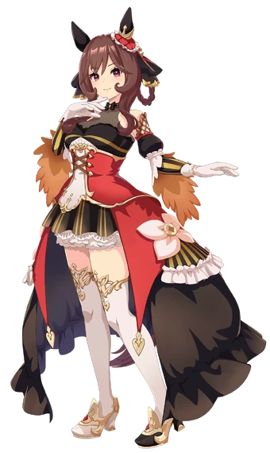

TRACEN FESTIVAL
Arcade
Seis atrações especiais do Festival. Escolha um jogo.Passe do Fliperama0 / 6 atrações concluídas
ATRAÇÃO 01
Desafio de Força da Gentildonna
A barra se move continuamente. Aperte GOLPEAR quando o marcador estiver o mais próximo possível do centro. São cinco tentativas.

GENTILDONNAMostre-me a sua força.
ERROBOMÓTIMOPERFEITOÓTIMOBOMERRO
Tentativa 1/5Pontos 0Melhor —
ATRAÇÃO 02
Adivinhe pela Silhueta
Rodada 1/8Acertos 0
ATRAÇÃO 03
Máquina de Garra Tracen
A garra se move sozinha. Aperte PEGAR quando ela estiver sobre um chaveiro.
Tentativas 10Prêmios 0/8
Y
ATRAÇÃO 04
Conecte os Casais Tracen
Toque em uma personagem e depois em sua parceira. Encontre os quatro casais com o menor número de erros possível.
Casais 0/4Erros 0Tempo 00:00
Rice Shower ↔ Mihono BourbonMeisho Doto ↔ TM Opera O
Agnes Tachyon ↔ Manhattan CafeOrfevre ↔ Gentildonna
Escolha a primeira personagem.
ATRAÇÃO 05
Jogo da Velha — Uma Musume
Escolha sua personagem. A CPU escolherá outra para enfrentar você.
ATRAÇÃO 06
Labirinto da Manhattan Cafe
Você é a pequena luz. Encontre Manhattan Cafe. Use WASD, setas ou os controles.
A presença dela está em algum lugar...